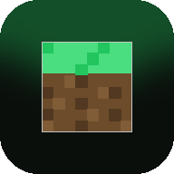

Wybrana wersja klienta
—
wczytywanie danych…

wersja aplikacji 1.0.0
Przeglądaj wersje klienta i pobieraj pliki prosto ze źródła projektu. Pobrania są weryfikowane sumą SHA-512.
—
wczytywanie danych…
—
pobieranie: Windows / Linux (flatpak)
—
—
cdn.jsdelivr.net/gh/xMelonekMaX/ogulniega-distribution
—
wczytywanie…
.apk z ostatniego wydania i zainstaluj
(trzeba zezwolić na instalację z nieznanych źródeł).Ta aplikacja nie uruchamia gry — jest katalogiem wersji i modów. Minecraft Java wymaga JVM, więc na Androidzie potrzebny jest launcher, który ją dostarcza, np. PojavLauncher, TurtleLauncher albo MojoLauncher.
Sprawdzam tryb pracy…
To nieoficjalna aplikacja społecznościowa. Nie jest powiązana z autorem klienta Ogulniega ani z Mojang/Microsoft. Nie zawiera plików gry — tylko odczytuje publiczne pliki JSON projektu. Znak „Minecraft” należy do Mojang Studios.
Krój nagłówków: Press Start 2P (SIL Open Font License 1.1, Cody „CodeMan38” Boisclair). Ikony i układ: własne, inspirowane stylem blokowym — bez assetów klienta Ogulniega.